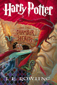
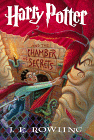
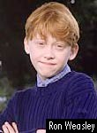
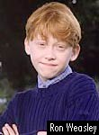
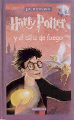
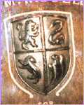
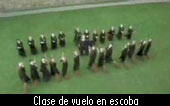
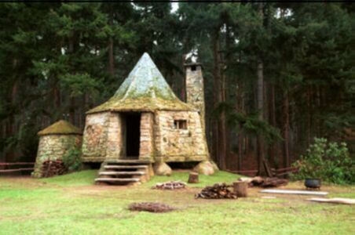
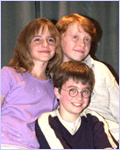
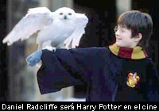

 



-Pagina de Violeta-
Harry Potter
Harry Potter es un chico huérfano que vive con sus despreciables tíos y su primo Dudley en Privet Drive 4.Harry descubre que es un mago y que tiene una vacante en el colegio de magia y
hechicería “Hogwarts”.En el Expreso de Hogwarts se hizo amigo de Ron un chico con el pelo tan rojo como una zanahoria .Harry ve a Hagrid de nuevo .Hagrid los guío hasta llegar al
castillo Hogwarts.Harry pasa la presentación del sombrero seleccionador y lo elige para ir a Gryffindor.Luego se hace amigo de Hermione una chica muy estudiosa.
Aquí están los libros de Harry Potter en español y en ingles.

Harry Potter tiene muchas paginas aquí te mostramos algunos links de Harry Potter
http://www.harrymaniacos.com.ar
http://www.pottermaniacos.f2s.com
http://www.geocities.com/Sitiomuggle
http://www.geocities.com/foroharrypotter
http://www.pagina.de/harrypotter
http://www.harrypotter.warnerbros.com/web/entry/download_browser
http://www.fandom.com/harrypotter/
http://harry-potter-movies.net
http://www.hp-fc.de/index_fr.html
http://www.scholastic.com/harrypotter/index.htm
http://www.emece.com.ar/harrypotter.htm
Test
estas preguntas las puedes contestar a este e-mail: mroizman@arnet.com.ar
Debes leer los cuatro libros de Harry Potter.
Que escoba tiene Harry en el 3er libro?
Cual es el boggart de Neville?
De que trabajan el padre de Ron?
Quien es Ludo Bagman?
Que es El Torneo de los Tres Magos?
Que escuelas participan?
Para que sirve el cáliz de fuego?
Quien es Dumbledore?
De que casa quieres ser tu?
Que es un muggle?
Cual es tu personaje preferido?
Si contestas estas preguntas si que eres un verdadero Harrymaniaco.
Hola
Bienvenido a

De
que casa quieres ser de Gryffindor de Hufflepuff de Ravenclaw o de
Slytherin.
Eso lo decidís vos mandándome un
a esta direccion mroizman@arnet.com.ar
Rumores
Alguna vez se preguntaron quien es la ilustradora de Harry Potter aqua tienen el nombre con foto y todo.Cada mes un rumor distinto.
Respuestas del mes pasado
Ganadores Paula,Julian y Clara los demás buena suerte para el mes que viene.
Para los nuevos el rumor del mes pasado eran estas fotos de la peli.








El próximo mes abra mes habrá mas fotos.
El
rompecabezas de Harry Potter esta aquí.
También aquí tienes su señalador.
Harry
Potter tiene muchos libros.No?
Que te gustariaque tenga esta